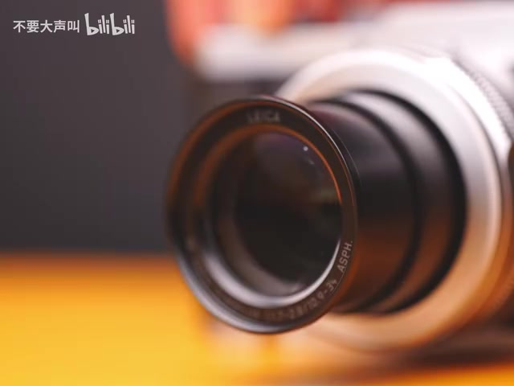
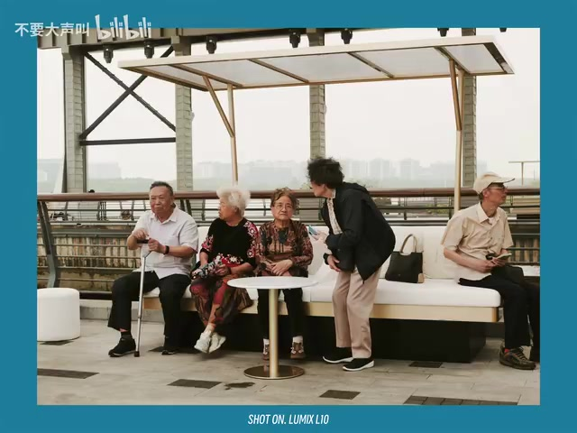
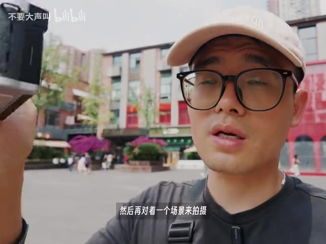
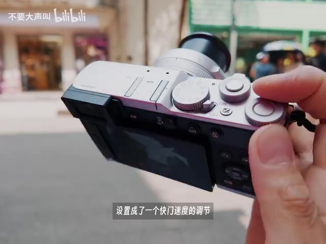
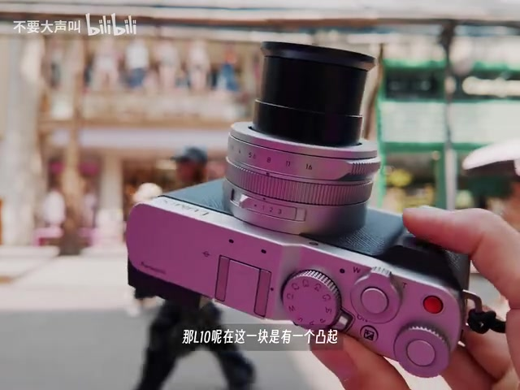
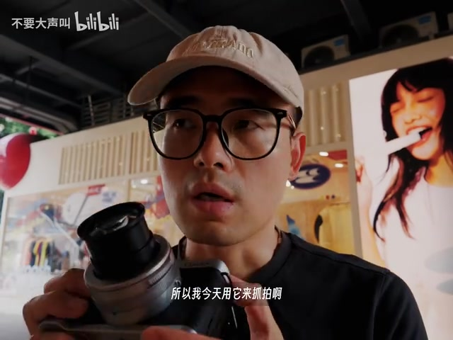
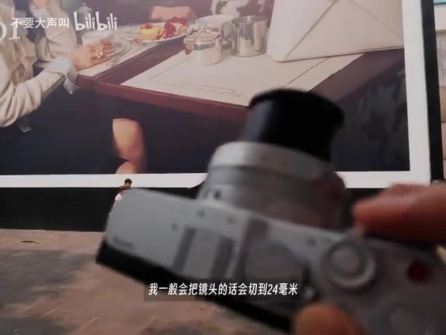
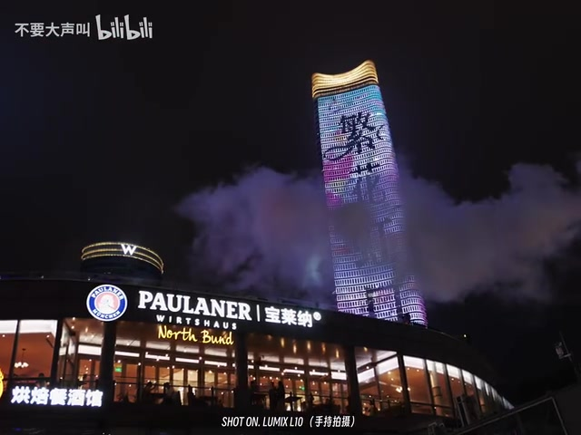

开场：一台让人想带出门的相机
镜头先贴近银色机身和伸出的镜头。UP 主把松下 L10 定位为适合街头摄影与日常记录的便携相机：外形好看、性能够用，更重要的是会让他产生“带出门拍摄”的欲望。标题里的“让 X100VI 下岗”，是他一周使用后的个人感受，并非严谨的两机横评。

他很快交代了自己的评判顺序：这种相机不先比极限画质，而先看操控、便携和拍摄体验。视频后面也始终沿着这条线走，因此更像一次真实街拍记录，而不是参数大全。
“像这种相机我一般最看重的就是它的操控性。” — UP 主，00:59
转录说明：Whisper 将少量产品名和摄影术语识别成近音字。正文依据画面与上下文作了必要校正；页面末尾仍按要求原样保留全部 Whisper 分段。
便携不是“最小”，而是能一直举在手里
L10 的体积在他看来接近松下 S9，并非塞进口袋就会消失的小相机。不过它仍落在“愿意每天带出门”的范围。镜头切到街头样张时，重点也不只是成像：相机够轻，人才更可能在等待画面时一直拿着它。

UP 主示范了自己的小习惯：预感前面有画面时，先把相机放在较高位置或保持举持，接近场景便迅速按下快门。若相机太重，这个等待动作会很累；而如果相机一直垂在低处，真正遇到陌生人或短暂场景时，又可能失去抬机的勇气。

光圈、快门、ISO 和焦段，都尽量不用进菜单
接下来镜头贴到机顶。镜头光圈环直接负责光圈；UP 主把一个按键自定义成快门速度调节，ISO 也能直接改；按下曝光补偿键后，再转拨轮调整补偿。对街拍来说，这些操作的意义不是按钮多，而是视线仍留在现场时，手指就能完成修改。

机身还有一个 FN 拨杆，默认切换 4:3、1:1、16:9、3:2 等照片比例。他把它改成 28mm、35mm、50mm 三个常用等效焦段的快速切换。视频稍后又出现 24mm 的场景用法；这说明焦段设置会随现场变化，并不是固定配方。
“这样就能通过FN开关来快速切换焦段。” — UP 主，02:53
凸起的握柄，加上相位对焦，服务的是单手抓拍
与正面较平的 S9 相比，L10 在机身前后都做了凸起，背部留出拇指支点。UP 主认为这让握持更舒服，单手操作也没有问题。画面旋转机身时，可以清楚看到右侧的小握柄和机顶控制区。

对焦部分，UP 主以当天街头抓拍经历作判断：L10 使用相位对焦，他采用 AFC 连续对焦、打开人脸识别，并把对象检测目标设为人眼。视频给出的证据是一次个人实拍过程，不等同于标准化命中率测试，但至少说明这套配置没有妨碍他完成当天抓拍。

遇到大广告牌，就切到 24mm 再换个低角度
一面巨大的广告画进入视野，35mm 很难完整容纳，UP 主便把焦段切到 24mm，再从更低角度寻找人与画面的关系。他特别期待路人因为好奇而进入画面：街拍里的偶然性，在这一刻比器材参数更重要。

翻转屏因此成为他的街拍选机因素之一：它帮助摄影者改变视角，而不必把身体摆到夸张位置。续航方面，他表示 L10 与 S9 使用同款大电池，一天街拍基本一块电池就能完成；这是个人单日使用结论，拍摄量和设置不同会改变结果。
夜景样张之后，他把话题落回“先拍下来”
视频后段简要提到传感器、处理器、降噪和动态范围增强模式，并用夜景画面说明高 ISO 与高光暗部表现。相关硬件型号在 Whisper 转录中存在明显误识别，视频又没有展开实验条件，因此更稳妥的读法是：这些是 UP 主对一周体验和样张的主观评价，不是可复现的画质测试。

最后一分钟，器材退到背景。UP 主说，看到场景却犹豫，往往已经说明那里有兴趣点；先把它拍下来，之后若照片普通，删除即可。视频的真正收束并非“L10 赢过 X100VI”，而是便携、操控、对焦和续航一起降低了按下快门的阻力。
“你就应该把它拍下来，因为我们很难知道那个时候会发生什么。” — UP 主，05:42